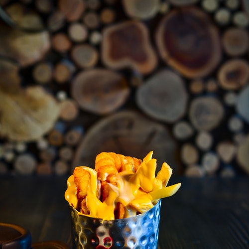

Cheesy chips (or cheese fries, if you prefer) is a comforting British chip shop classic.
Ingredients
-
Large potato, cut into chunky chips and parboiled
-
Sea salt and freshly ground black pepper
-
5 tbsp olive oil
-
Sprig fresh thyme
-
142ml/5fl oz double cream
-
55g/2oz cheddar cheese, grated
Steps
-
Preheat the oven to 220C/425F/Gas 7.
-
For the chips, place the parboiled chips onto a baking tray, season to taste, with salt and freshly ground black pepper and drizzle with the oil.
-
Place into the oven and roast for 15 minutes, or until cooked thoroughly and golden.
-
For the sauce, add the thyme, cream and cheese into a saucepan and simmer, stirring continously, until the cheese has melted.
-
To serve, place the chips into a serving bowl and pour over the cheese sauce